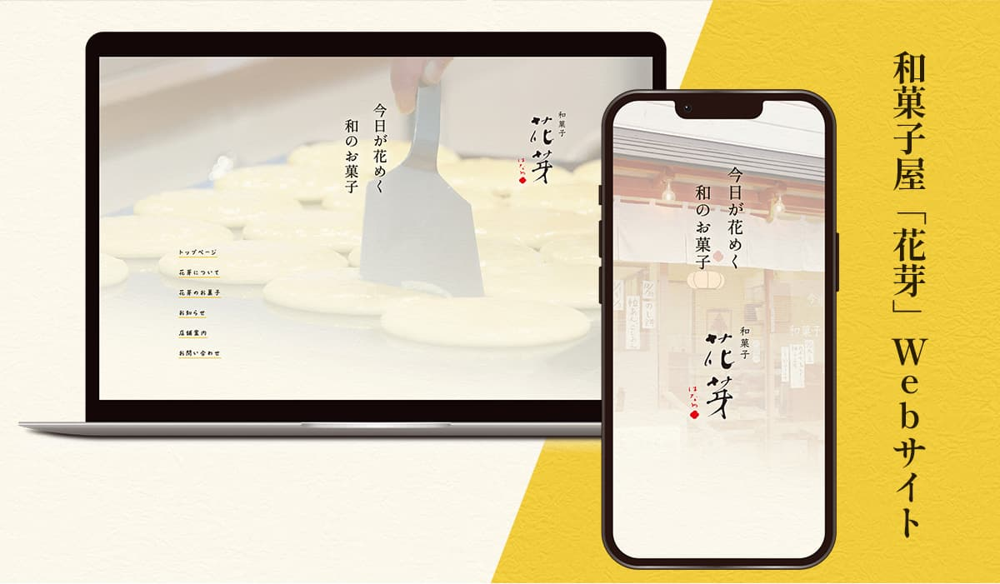

カフェ「虎威殿」サイトデザイン
Webデザイン
架空の和風カフェ「虎威殿」のサイトデザインをしました。
学校課題のもので、一年生後期に作成した作品です。この作品を通じて、Figmaの使い方や、「和風」などざっくりとしたイメージの詰め方を学ぶことができました。
- 制作期間
- 2024年10月〜2024年11月
- 使用ツール
- Illustrator / Photoshop / Figma
- 担当範囲
- 全て
- 作品URL（figmaプロトタイプ）
- https://www.figma.com/proto/GQYEKmWBsQDBg7BMlKHhSi/%E8%99%8E%E5%A8%81%E6%AE%BF%E3%83%87%E3%82%B6%E3%82%A4%E3%83%B3?node-id=1-2&t=22Skm2QoKFS8Pk48-1
制作過程
企画固め
ヒアリングに臨む前に、手書きでアイデアを羅列しイメージを固めています。
ヒアリング
対面では３回、デザインの確認はメールで行いながら制作を進めていきました。
初回の対面ヒアリングでは、ヒアリングシートを自作し、それをもとにサイトの方向性を決めました。
クライアントからの大きな要望として、
・親しみやすさ、女性らしく柔らかい雰囲気にまとめる
・黄色をメインとして、懐かしさを感じる配色にする
・これまで使用していたロゴと、キャッチフレーズを使う
・花芽のこだわりを知ってもらえるサイトにする
というものがありました。
デザイン
デザインはFigmaを用いて作成しました。
配色は、花芽で以前から使用されていたポスターの配色を参考にして決定しました。無彩色を入れないことで優しい印象にしています。コントラスト比にも配慮しています。
フォントは、表題を明朝体にして話の雰囲気を出し、本文を手書き風フォントにすることで親しみやすさ・女性らしさを出しています。
背景に和紙のようなテクスチャを入れたこと、堅苦しくならない程度に縦書きを採用することで、和の雰囲気を演出しています。
コーディング
直近で学校の授業で学んだBEMの形式で、SCSSを使用しコードを書きました。
microCMSを組み込んでいます。サイトの”営業日カレンダー””本日の品揃え””季節の商品”のところが更新できるようになっています。
InstagramAPIを用いて、インスタグラムでの最新の投稿がお知らせとして更新されるようにしました。
※現在、Facebookのアカウントが停止しておりサイトに表示されません。
展示
進級制作展当日は、ポスターでのブース展示とプレゼンテーションがありました。
プレゼンテーションでは、私が抱える花芽への大きな愛がなるべく伝わるように、堂々と行いました。見てくださった企業様からはたくさんお褒めの言葉をいただくことができました。
工夫・苦労したところ
折りたたみメニュー
花芽のロゴが縦書きなので、綺麗に収めるためにデスクトップ版では折りたたみメニューを左端に縦で配置しています。また、メニュー開閉ボタンは、店名から花の蕾が開閉するアニメーションにしました。5枚の画像でぱらぱら漫画のように再生しています。
画像の切り抜き
使用する画像は、花の形に切り取られるようにコーディングしています。花の輪郭線を真っ直ぐの線にしないことで、手作り感を演出しています。
ブラウザのウインドウ幅を変えても、切り取りの形がそれに合わせて変わるようにするのに苦労しました。
サイト運用のしやすさ
花芽ではオーナーが一人で店を切り盛りされており、かなり忙しくされています。また、パソコン操作が得意ではないともおっしゃっていました。
そこで、操作が比較的簡単でわかりやすいmicroCMSを導入しました。さらに、インスタグラムを更新するだけでサイトも更新されるようにInstagramAPIも導入しています。
使用している画像
花芽の魅力を伝える上で、紹介する和菓子の写真は美味しそうであることが絶対条件だと考えました。
そこで、レンタルした一眼レフカメラを使用し、自分で撮影した画像を使用しています。撮影のために、朝7時ごろからお店にお邪魔し撮影をさせていただきました。
製作者コメント
花芽の和菓子はものすっっっっごくおいしくて、店主さんも良い方で、花芽は本当に大好きなお店です。サイトを作ることで、その素敵な和菓子屋を他の人に広めるお手伝いが公認ででき、楽しさとやりがいでいっぱいでした。
このサイトを見て、和菓子食べたいな〜と思っていただけたら、この上なく嬉しいです。おすすめはあんドーナツです。
2025年夏に運用開始を目標に、さらに調整をしております。